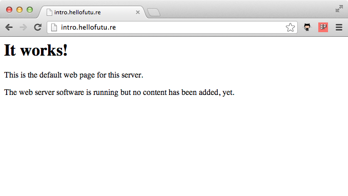

Getting Started with Chef
Learn how to configure, manage and provision cloud servers with Chef by following practical examples with real world applications.
Taking your first steps with Chef can be daunting. After completing each chapter of this book you will end up with a working example of a Chef setup that you understand. Concepts and best practices are explained by example so you'll know how to customise the code in the book for your own needs.
The book starts with the simplest way to use Chef and slowly introduces each new concept with examples. You'll understand how to overcome common problems before you encounter them and by the final chapter you will be equipped with all the tools required to manage even the most complicated cloud infrastructure.
This book tries to avoid magic and explains what each Chef example does so you'll understand exactly what is causing Chef to do whatever it is that it's doing.
If you find any issues with this book or have any suggestions of things you'd like to change please submit an issue or pull request over at our Github page.
1. Introducing Chef
In the first chapter we'll introduce you to Chef and we'll be working over a SSH connection. There are better ways to work with Chef and we'll get to them in later chapters but things will be kept as simple as possible to start with.
The simplest way to use Chef is chef-solo. It allows you to install, configure and manage the packages required by your application without the complication of any client and server configuration. We'll start with the common scenario that you have to setup a website designer with a Wordpress environment.
Every time you do this you have to setup a web server, remember lots of installation commands, edit configuration files, fetch a copy of Wordpress and do lots of setup. Generally you always forget one step and it is an unnecessary distraction from what you should be doing. Wouldn't it be nice if this was all entirely automated? With Chef we can define our infrastructure as code and automate tasks just like this.
So before we start, we need somewhere test our code. We'll introduce you to tools that help you manage your Chef development and testing later in the book but for now we'll just need root access to a fresh install of Ubuntu. Don't just run Chef on your Ubuntu desktop, we need somewhere to play around.
There are more than few providers of cloud instances but we favour Rackspace, sign up to Rackspace and we'll get some affiliate revenue that will help fund our writing of future guides.
Once you've signed up, create an Ubuntu instance. Alternatively, you can install Ubuntu in a virtual machine. If you do, create a snapshot once Ubuntu is installed so we can re-use the fresh installation for later examples.
Installing Chef
SSH to your vanilla Ubuntu box and run the following command to install Chef. This used to be a more involved process but thanks to the new omnibus installer it couldn't be simpler.
root@intro:~# curl -L https://www.opscode.com/chef/install.sh | bash Thank you for installing Chef!
Confirm Chef has successfully installed.
root@intro:~# chef-client -v
...
Chef: 11.4.0
Of course, your version number may be different.
Our first Chef cookbook
So, what do we need to do to get our web server up and running?
- Install and configure Apache
- Install and configure MySQL
- Install and configure PHP
- Deploy our website code to the site
How do we do that? We write our first Chef cookbook. But before we do that we should setup a file structure that will help us organise our various Chef files. Opscode, the makers of Chef provide one. They call it simply the Chef Repository.
root@intro:~# wget http://github.com/opscode/chef-repo/tarball/master root@intro:~# tar -zxf master root@intro:~# mv opscode-chef-repo* chef-repo root@intro:~# rm master
If we look inside the chef-repo directory we can see the following:
root@intro:~# cd chef-repo/ root@intro:~/chef-repo# ls certificates chefignore config cookbooks data_bags environments LICENSE Rakefile README.md roles
Our Chef cookbook should unsurprisingly reside within the cookbooks directory. We're going to call it "phpapp". We can use the command knife to help us manage our cookbooks. First we should tell knife where to find our cookbooks directory.
root@intro:~/chef-repo# mkdir .chef root@intro:~/chef-repo# echo "cookbook_path [ '/root/chef-repo/cookbooks' ]" > .chef/knife.rb
That creates a simple configuration file for knife which tells knife to use the cookbook directory inside our Chef Repository. Now we'll ask knife to create our "phpapp" cookbook.
root@intro:~/chef-repo# knife cookbook create phpapp ** Creating cookbook phpapp ** Creating README for cookbook: phpapp ** Creating CHANGELOG for cookbook: phpapp ** Creating metadata for cookbook: phpapp
So let's look at what knife has created.
root@intro:~/chef-repo# cd cookbooks/phpapp root@intro:~/chef-repo/cookbooks/phpapp# ls attributes CHANGELOG.md definitions files libraries metadata.rb providers README.md
recipes resources templates
So now we'd need write our cookbook to install and configure Apache, MySQL and PHP. How do we do that? Well, thanks to the open source nature of Chef, we don't have to. Welcome to the Opscode Community cookbook site.

Here you'll find lots of well crafted, tested and battle hardened cookbooks that will do most of the work for you. Think of them as libraries you will use inside your code. We'll start with the apache2 cookbook. There's no need to manually download it from the community site, knife has this functionality built in. We'll also install the apt cookbook. This will help us ensure chef-solo does an apt-get update before we install any packages.
root@intro:~/chef-repo/cookbooks/phpapp# cd .. root@intro:~/chef-repo/cookbooks# knife cookbook site download apache2 Downloading apache2 from the cookbooks site at version 1.6.0 to /root/chef-repo/cookbooks/apache2-1.6.0.tar.gz Cookbook saved: /root/chef-repo/cookbooks/apache2-1.6.0.tar.gz root@intro:~/chef-repo/cookbooks# tar zxf apache2* root@intro:~/chef-repo/cookbooks# rm apache2*.tar.gz root@intro:~/chef-repo/cookbooks# knife cookbook site download apt Downloading apt from the cookbooks site at version 1.9.0 to /root/chef-repo/cookbooks/apt-1.9.0.tar.gz Cookbook saved: /root/chef-repo/cookbooks/apt-1.9.0.tar.gz root@intro:~/chef-repo/cookbooks# tar zxf apt* root@intro:~/chef-repo/cookbooks# rm apt*.tar.gz
Let's go back into our cookbook.
root@intro:~/chef-repo/cookbooks# cd phpapp
Open metadata.rb in your favourite text editor. Vim or nano are both available by default on Ubuntu. We suggest using nano if you're not used to Vim. So type "nano metadata.rb".
name 'phpapp' maintainer 'YOUR_COMPANY_NAME' maintainer_email 'YOUR_EMAIL' license 'All rights reserved' description 'Installs/Configures phpapp' long_description IO.read(File.join(File.dirname(__FILE__), 'README.md')) version '0.1.0' depends "apache2"
Add the line in green. This tells Chef our cookbook relies on the apache2 cookbook to function. Save the file. Then open recipes/default.rb in your text editor.
# # Cookbook Name:: phpapp # Recipe:: default # # Copyright 2013, YOUR_COMPANY_NAME # # All rights reserved - Do Not Redistribute # include_recipe "apache2"
Again add the line in green. This includes the default recipe from the apache2 cookbook in our recipe. The default apache2 recipe (which can be found in cookbooks/apache2/recipes/default.rb) installs and configures Apache for us.
Okay. Let's see if what we've got so far works! Go back to the chef-repo directory.
root@intro:~/chef-repo/cookbooks/phpapp# cd ../..
Create a new file called solo.rb in your text editor.
file_cache_path "/root/chef-solo" cookbook_path "/root/chef-repo/cookbooks"
Add the lines in green. This file configures chef-solo, telling it where to keep it's cache of files and where our cookbooks are. Save the file. Now create a file called web.json.
{
"run_list": [ "recipe[apt]", "recipe[phpapp]" ]
}
Add the lines in green. We tell chef to run the apt cookbook followed by our phpapp cookbook. Why have we not included the apt cookbook inside our recipe as we did with the apache2 cookbook? It's because our PHP application requires Apache to function but we don't necessarily want to tie our cookbook to platforms that only support apt.
Our first Chef run
root@intro:~/chef-repo# chef-solo -c solo.rb -j web.json
Starting Chef Client, version 11.4.0
...
Chef Client finished, 14 resources updated
Chef gives you comprehensive information about exactly what it's done. By default, the actions it's taken are displayed in green and when it updates a template it shows you what's changed.
Now you can visit your new Apache server.

Next we'll setup MySQL. As the community site has a cookbook for MySQL, the process is similar to Apache. Again we'll ask knife to fetch the cookbook from the community site for us.
root@intro:~/chef-repo# cd cookbooks root@intro:~/chef-repo/cookbooks# knife cookbook site download mysql Downloading mysql from the cookbooks site at version 2.1.2 to /root/chef-repo/cookbooks/mysql-2.1.2.tar.gz Cookbook saved: /root/chef-repo/cookbooks/mysql-2.1.2.tar.gz root@intro:~/chef-repo/cookbooks# tar zxf mysql* root@intro:~/chef-repo/cookbooks# rm mysql-*.tar.gz
So let's install MySQL then. We want to install both the MySQL client and the server as we'll be running our application on a single instance for now. Look inside the MySQL cookbook and see exactly what we need to include in our recipe.
root@intro:~/chef-repo/cookbooks# cd mysql/recipes/ root@intro:~/chef-repo/cookbooks/mysql/recipes# ls client.rb default.rb ruby.rb server_ec2.rb server.rb
There's a client recipe and a server recipe. We'll need to include both then. Go back to our cookbook.
root@intro:~/chef-repo/cookbooks/mysql/recipes# cd ../../phpapp
Open metadata.rb in your text editor.
name 'phpapp' maintainer 'YOUR_COMPANY_NAME' maintainer_email 'YOUR_EMAIL' license 'All rights reserved' description 'Installs/Configures phpapp' long_description IO.read(File.join(File.dirname(__FILE__), 'README.md')) version '0.1.0' depends "apache2" depends "mysql"
Add the line in green and save the file. Now edit recipes/default.rb.
# # Cookbook Name:: phpapp # Recipe:: default # # Copyright 2013, YOUR_COMPANY_NAME # # All rights reserved - Do Not Redistribute # include_recipe "apache2" include_recipe "mysql::client" include_recipe "mysql::server"
Add the two lines in green and save the file. Now let's run chef-solo again!
Our second Chef run
root@intro:~/chef-repo/cookbooks/phpapp# cd ../.. root@intro:~/chef-repo# chef-solo -c solo.rb -j web.json Starting Chef Client, version 11.4.0 Compiling Cookbooks... [2013-02-11T21:47:33+00:00] ERROR: Running exception handlers [2013-02-11T21:47:33+00:00] ERROR: Exception handlers complete Chef Client failed. 0 resources updated [2013-02-11T21:47:33+00:00] FATAL: Stacktrace dumped to /root/chef-solo/chef-stacktrace.out [2013-02-11T21:47:33+00:00] FATAL: Chef::Exceptions::CookbookNotFound: Cookbook build-essential not found. If you're loading build-essential from another cookbook, make sure you configure the dependency in your metadata
Oh that's not good! We've got an error. The cookbook build-essential is not found. We haven't included it in our cookbook so it's probably required by the mysql cookbook we've just added. We know we have to specify the cookbook dependencies for our cookbook in metadata.rb, so we'll look at the metadata.rb file in the mysql cookbook.
Open cookbooks/mysql/metadata.rb in your editor.
name "mysql"
maintainer "Opscode, Inc."
maintainer_email "cookbooks@opscode.com"
license "Apache 2.0"
description "Installs and configures mysql for client or server"
long_description IO.read(File.join(File.dirname(__FILE__), 'README.md'))
version "2.1.2"
recipe "mysql", "Includes the client recipe to configure a client"
recipe "mysql::client", "Installs packages required for mysql clients using run_action magic"
recipe "mysql::server", "Installs packages required for mysql servers w/o manual intervention"
recipe "mysql::server_ec2", "Performs EC2-specific mountpoint manipulation"
%w{ debian ubuntu centos suse fedora redhat scientific amazon freebsd windows mac_os_x }.each do |os|
supports os
end
depends "openssl"
depends "build-essential"
suggests "homebrew"
suggests "windows"
There's more below but let's just concentrate on depends and suggests. The suggests entries tell Chef that some optional functionality may depend on that cookbook. We already know the depends entries specify a hard requirement. So we need to download build-essential and openssl.
There are some good tools available to help you manage cookbooks and dependences which we'll cover in later chapters but we'll just download the required cookbooks using knife for now.
root@intro:~/chef-repo# cd cookbooks root@intro:~/chef-repo/cookbooks# knife cookbook site download openssl Downloading openssl from the cookbooks site at version 1.0.0 to /root/chef-repo/cookbooks/openssl-1.0.0.tar.gz Cookbook saved: /root/chef-repo/cookbooks/openssl-1.0.0.tar.gz root@intro:~/chef-repo/cookbooks# tar zxf openssl*.tar.gz root@intro:~/chef-repo/cookbooks# rm openssl*.tar.gz root@intro:~/chef-repo/cookbooks# knife cookbook site download build-essential Downloading build-essential from the cookbooks site at version 1.3.4 to /root/chef-repo/cookbooks/build-essential-1.3.4.tar.gz Cookbook saved: /root/chef-repo/cookbooks/build-essential-1.3.4.tar.gz root@intro:~/chef-repo/cookbooks# tar zxf build-essential-*.tar.gz root@intro:~/chef-repo/cookbooks# rm build-essential-*.tar.gz
And now we've fulfilled those dependencies let's try and re-run chef-solo!
root@intro:~/chef-repo/cookbooks# cd .. root@intro:~/chef-repo# chef-solo -c solo.rb -j web.json Starting Chef Client, version 11.4.0 Compiling Cookbooks... [2013-02-12T18:44:18+00:00] WARN: Cloning resource attributes for service[apache2] from prior resource (CHEF-3694) [2013-02-12T18:44:18+00:00] WARN: Previous service[apache2]: /root/chef-repo/cookbooks/apache2/recipes/default.rb:24:in `from_file' [2013-02-12T18:44:18+00:00] WARN: Current service[apache2]: /root/chef-repo/cookbooks/apache2/recipes/default.rb:221:in `from_file' [2013-02-12T18:44:18+00:00] FATAL: You must set node['mysql']['server_debian_password'], node['mysql']['server_root_password'], node['mysql']['server_repl_password'] in chef-solo mode. For more information, see https://github.com/opscode-cookbooks/mysql#chef-solo-note
Again we have an error. But that's okay, the MySQL cookbook has told us how to fix the error. We need to define a root password for MySQL. This is an attribute. In Chef attributes are values which we use to configure our applications or platform. An attribute could be a port number for Apache. Often a sensible default is specified inside a cookbook. Such a default for a web server port would be 80. There's no sensible default MySQL password, so we need to specify one. Open web.json.
{
"mysql": {"server_root_password": "808052769e2c6d909027a2905b224bad", "server_debian_password": "569d1ed2d46870cc020fa87be83af98d", "server_repl_password": "476911180ee92a2ee5a471f33340f6f4"},
"run_list": [ "recipe[apt]", "recipe[phpapp]" ]
}
Add the code in green. Let's re-run chef-solo.
root@intro:~/chef-repo# chef-solo -c solo.rb -j web.json
Starting Chef Client, version 11.4.0
...
Chef Client finished, 14 resources updated
Much more successful, we now have MySQL. Now to install PHP. You guessed it, there's a community cookbook for PHP.
root@intro:~/chef-repo# cd cookbooks/ root@intro:~/chef-repo/cookbooks# knife cookbook site download php Downloading php from the cookbooks site at version 1.1.8 to /root/chef-repo/cookbooks/php-1.1.8.tar.gz Cookbook saved: /root/chef-repo/cookbooks/php-1.1.8.tar.gz root@intro:~/chef-repo/cookbooks# tar zxf php*.tar.gz root@intro:~/chef-repo/cookbooks# rm php*.tar.gz
The php cookbook also depends on the xml cookbook, so let's grab that one.
root@intro:~/chef-repo/cookbooks# knife cookbook site download xml Downloading xml from the cookbooks site at version 1.1.2 to /root/chef-repo/cookbooks/xml-1.1.2.tar.gz Cookbook saved: /root/chef-repo/cookbooks/xml-1.1.2.tar.gz root@intro:~/chef-repo/cookbooks# tar zxf xml-*.tar.gz root@intro:~/chef-repo/cookbooks# rm xml-*.tar.gz
Let's use the php cookbook in our cookbook.
root@intro:~/chef-repo/cookbooks# cd phpapp
Next we add the new php cookbook as a dependency for our cookbook. Open metadata.rb.
name 'phpapp'
maintainer 'YOUR_COMPANY_NAME'
maintainer_email 'YOUR_EMAIL'
license 'All rights reserved'
description 'Installs/Configures phpapp'
long_description IO.read(File.join(File.dirname(__FILE__), 'README.md'))
version '0.1.0'
depends "apache2"
depends "mysql"
depends "php"
Add the code in green and save the file. And now lets include the php recipe to our cookbook. Open recipes/default.rb.
#
# Cookbook Name:: phpapp
# Recipe:: default
#
# Copyright 2013, YOUR_COMPANY_NAME
#
# All rights reserved - Do Not Redistribute
#
include_recipe "apache2"
include_recipe "mysql::client"
include_recipe "mysql::server"
include_recipe "php"
include_recipe "php::module_mysql"
include_recipe "apache2::mod_php5"
apache_site "default" do
enable true
end
Add the code in green. Here we add the PHP default recipe, one to install the PHP MySQL extension and one to enable the Apache PHP module mod_php. We also enable the default site so we can check our installation has worked. Save the file and we're good to run chef-solo again to install all of those things.
root@intro:~/chef-repo/cookbooks/phpapp# cd ../.. root@intro:~/chef-repo# chef-solo -c solo.rb -j web.json Starting Chef Client, version 11.4.0 ... Chef Client finished, 8 resources updated
So that's PHP installed. Let's confirm that by creating a test page. Open /var/www/test.php in your editor.
<?php phpinfo(); ?>
Add the code in green and save the file. Now goto http://yourserver/test.php

Scroll down and make sure the MySQL extension is installed.

We can see MySQL is installed. Let's delete the test file.
root@intro:~/chef-repo# rm /var/www/test.php
Idempotence
At this point you might well be thinking all that was a lot of effort for not much reward. You could have installed that with a line similar to "apt-get install mysql-server apache2 php5 libapache2-mod-php5". What's happened behind the scenes though is that as well as installing our packages, Chef has updated all of the configuration files for each package with consistent defaults. If we bring up another server and run the same cookbooks, the same things will be installed. We can repeat the chef-solo command repeatedly and we'll end up with the same result as we did the first time we ran it. The process is idempotent; it will always produce the same result no matter how many times it is run.
Now if you were setting up a server by hand, this is where you'd manually setup a database, copy the web application code over, create a MySQL user for the website and configure virtual hosts. Instead, we'll use Chef to automate the setup of our application. This allows us to set up multiple servers and know we will always get the same results.
Before we setup our database we need to fetch a final few cookbooks. The database cookbook provides resources that allow us to easily manage databases and database users. The database cookbook depends on the postgresql, xfs and aws cookbooks so we'll need those as well even though we won't be using them.
root@intro:~/chef-repo/cookbooks# knife cookbook site download database Downloading database from the cookbooks site at version 1.3.12 to /root/chef-repo/cookbooks/database-1.3.12.tar.gz Cookbook saved: /root/chef-repo/cookbooks/database-1.3.12.tar.gz root@intro:~/chef-repo/cookbooks# tar zxf database-*.tar.gz root@intro:~/chef-repo/cookbooks# knife cookbook site download postgresql Downloading postgresql from the cookbooks site at version 2.2.2 to /root/chef-repo/cookbooks/postgresql-2.2.2.tar.gz Cookbook saved: /root/chef-repo/cookbooks/postgresql-2.2.2.tar.gz root@intro:~/chef-repo/cookbooks# tar zxf postgresql-*.tar.gz root@intro:~/chef-repo/cookbooks# knife cookbook site download xfs Downloading xfs from the cookbooks site at version 1.1.0 to /root/chef-repo/cookbooks/xfs-1.1.0.tar.gz Cookbook saved: /root/chef-repo/cookbooks/xfs-1.1.0.tar.gz root@intro:~/chef-repo/cookbooks# tar zxf xfs-*.tar.gz root@intro:~/chef-repo/cookbooks# knife cookbook site download aws Downloading aws from the cookbooks site at version 0.100.6 to /root/chef-repo/cookbooks/aws-0.100.6.tar.gz Cookbook saved: /root/chef-repo/cookbooks/aws-0.100.6.tar.gz root@intro:~/chef-repo/cookbooks# tar zxf aws-*.tar.gz root@intro:~/chef-repo/cookbooks# rm *.tar.gz
root@intro:~/chef-repo/cookbooks# cd phpapp
We'll now add the new dependencies to our cookbook. Open metadata.rb.
name 'phpapp'
maintainer 'YOUR_COMPANY_NAME'
maintainer_email 'YOUR_EMAIL'
license 'All rights reserved'
description 'Installs/Configures phpapp'
long_description IO.read(File.join(File.dirname(__FILE__), 'README.md'))
version '0.1.0'
depends "apache2"
depends "mysql"
depends "php"
depends "database"
Add the code in green and save the file. It's now time to write our first Chef recipe. To setup our web application we need to:
- Create a MySQL database for our application
- Create a MySQL database user for our application
- Fetch the code for our web application
- Create a configuration file with database details and other configuration options for our web application
- Create an Apache VirtualHost for our web application
Resources
A resource is an action that your recipe can perform. The template resource creates a file by expanding variables in a template. The user resource can be used to manage users. Chef ships with many other useful resources, an overview of which can be found later in the chapter Resources. The database cookbook provides the resource mysql_database which we will now use to perform the first step.
Open recipes/default.rb
# # Cookbook Name:: phpapp # Recipe:: default # # Copyright 2013, YOUR_COMPANY_NAME # # All rights reserved - Do Not Redistribute # include_recipe "apache2" include_recipe "mysql::client" include_recipe "mysql::server" include_recipe "php" include_recipe "php::module_mysql" include_recipe "apache2::mod_php5" include_recipe "mysql::ruby" apache_site "default" do enable true end mysql_database 'phpapp' do connection ({:host => 'localhost', :username => 'root', :password => node['mysql']['server_root_password']}) action :create end
Add the code in green but hang on a minute. We've hard-coded the name of the database name to be "phpapp". That could prevent our recipe from being reusable. Really the database name should be an attribute. Let's change our code so that's the case.
mysql_database node['phpapp']['database'] do
connection ({:host => 'localhost', :username => 'root', :password => node['mysql']['server_root_password']})
action :create
end
Replace 'phpapp' with node['phpapp']['database']. Save the file. Let's see run chef-solo again and see if our changes are successful.
root@intro:~/chef-repo/cookbooks/phpapp# cd ../.. root@intro:~/chef-repo# chef-solo -c solo.rb -j web.json Starting Chef Client, version 11.4.0
And that's failed. Let's look at the key parts of the message we received; highlighted bellow in yellow.
NoMethodError ------------- undefined method `[]' for nil:NilClass Cookbook Trace: --------------- /root/chef-repo/cookbooks/phpapp/recipes/default.rb:17:in `from_file' Relevant File Content: ---------------------- /root/chef-repo/cookbooks/phpapp/recipes/default.rb: 10: include_recipe "apache2" 11: include_recipe "mysql::client" 12: include_recipe "mysql::server" 13: include_recipe "php" 14: include_recipe "php::module_mysql" 15: include_recipe "apache2::mod_php5" 16: 17>> mysql_database node['phpapp']['database'] do 18: connection ({:host => 'localhost', :username => 'root', :password => node['mysql']['server_root_password']}) 19: action :create 20: end 21:
The message undefined method `[]' for nil:NilClass is Ruby telling us that the attribute node['phpapp']['database'] doesn't exist. We need to define it.
Attributes
The missing database attribute can be defined in a few places. We could define the attribute in web.json like we did with the MySQL ones but that makes our cookbook unnecessarily difficult to use. We want to provide the option to use a database called something other than phpapp but we should really provide a default.
root@intro:~/chef-repo# cd cookbooks/phpapp
We now create called "attributes/default.rb". Open it in your editor.
default["phpapp"]["database"] = "phpapp"
Add the code in green and save the file.
root@intro:~/chef-rep/cookbooks/phpapp# cd ../..
root@intro:~/chef-repo# chef-solo -c solo.rb -j web.json
Starting Chef Client, version 11.4.0
...
Chef Client finished, 7 resources updated
We've got a database! Let's create the database user.
root@intro:~/chef-repo# cd cookbooks/phpapp
Open recipes/default.rb.
#
# Cookbook Name:: phpapp
# Recipe:: default
#
# Copyright 2013, YOUR_COMPANY_NAME
#
# All rights reserved - Do Not Redistribute
#
include_recipe "apache2"
include_recipe "mysql::client"
include_recipe "mysql::server"
include_recipe "php"
include_recipe "php::module_mysql"
include_recipe "apache2::mod_php5"
include_recipe "mysql::ruby"
apache_site "default" do
enable true
end
mysql_database node['phpapp']['database'] do
connection ({:host => 'localhost', :username => 'root', :password => node['mysql']['server_root_password']})
action :create
end
mysql_database_user node['phpapp']['db_username'] do
connection ({:host => 'localhost', :username => 'root', :password => node['mysql']['server_root_password']})
password node['phpapp']['db_password']
database_name node['phpapp']['database']
privileges [:select,:update,:insert,:create,:delete]
action :grant
end
Add the code in green and save the file. We'll create a default value for our web application's mysql username but not for the password. That will need to be specified in web.json. Open attributes/default.rb
default["phpapp"]["database"] = "phpapp"
default["phpapp"]["db_username"] = "phpapp"
Add the code in green and save the file.
root@intro:~/chef-repo/cookbooks/phpapp# cd ../..
Open web.json.
{
"mysql": {"server_root_password": "808052769e2c6d909027a2905b224bad", "server_debian_password": "569d1ed2d46870cc020fa87be83af98d", "server_repl_password": "476911180ee92a2ee5a471f33340f6f4"},
"phpapp": {"db_password": "212b09752d173876a84d374333ae1ffe"},
"run_list": [ "recipe[apt]", "recipe[phpapp]" ]
}
Add the code in green and save the file. Let's check our recipe still works.
root@intro:~/chef-repo# chef-solo -c solo.rb -j web.json
Starting Chef Client, version 11.4.0
...
Chef Client finished, 2 resources updated
Now we've setup our database we need to fetch a fresh copy of Wordpress.
Fetching Wordpress
We want to setup each new Wordpress build with the latest version so we'll fetch it from Wordpress.org. But how? Fortunately enough, Chef comes with the resource remote_file which will do just that for us.
root@intro:~/chef-repo# cd cookbooks/phpapp
Open up recipes/default.rb and add the following to the end of the recipe.
wordpress_latest = Chef::Config[:file_cache_path] + "/wordpress-latest.tar.gz"
remote_file wordpress_latest do
source "http://wordpress.org/latest.tar.gz"
mode "0644"
end
directory node["phpapp"]["path"] do
owner "root"
group "root"
mode "0755"
action :create
recursive true
end
execute "untar-wordpress" do
cwd node['phpapp']['path']
command "tar --strip-components 1 -xzf " + wordpress_latest
creates node['phpapp']['path'] + "/wp-settings.php"
end
You can see we've also used another new resource. The execute resource will run a shell command for us. Here we're asking it to untar the file we've downloaded from wordpress.org. We're ensuring our recipe is idempotent by telling execute that the command it's to run creates the file wp-settings.php. If it finds that file it will not run the command specified.
Save the file.
We need to tell our recipe where to put the Wordpress code so we'll add a default attribute. Open attributes/default.rb.
default["phpapp"]["path"] = "/var/www/phpapp"
Add the line in green to the end of the list of attributes and save the file. Now we'll see if Wordpress is downloaded.
root@intro:~/chef-rep/cookbooks/phpapp# cd ../..
root@intro:~/chef-repo# chef-solo -c solo.rb -j web.json
Starting Chef Client, version 11.4.0
...
Chef Client finished, 9 resources updated
Let's look at the output from chef-solo to ensure our changes have had the desired effect.
* remote_file[/root/chef-solo/wordpress-latest.tar.gz] action create
- copy file downloaded from [] into /root/chef-solo/wordpress-latest.tar.gz
Binary files /tmp/chef-tempfile20130316-22001-svs56r and /tmp/chef-rest20130316-22001-9ohdk differ
- change mode from '' to '0644'
* directory[/var/www/phpapp] action create
- create new directory /var/www/phpapp
- change mode from '' to '0755'
- change owner from '' to 'root'
- change group from '' to 'root'
* execute[untar-wordpress] action run
- execute tar --strip-components 1 -xzf /root/chef-solo/wordpress-latest.tar.gz
Let's see if the files are there.
root@intro:~/chef-repo# ls /var/www/phpapp index.php wp-admin wp-content wp-load.php wp-signup.php license.txt wp-blog-header.php wp-cron.php wp-login.php wp-trackback.php readme.html wp-comments-post.php wp-includes wp-mail.php xmlrpc.php wp-activate.php wp-config-sample.php wp-links-opml.php wp-settings.php
Good so we can see that works. But is our recipe idempotent? Let's re-run chef-solo and see.
root@intro:~/chef-repo# chef-solo -c solo.rb -j web.json
Starting Chef Client, version 11.4.0
...
Chef Client finished, 6 resources updated
Let's check the output of chef-solo.
* remote_file[/root/chef-solo/wordpress-latest.tar.gz] action create (up to date) * directory[/var/www/phpapp] action create (up to date) * execute[untar-wordpress] action run (up to date)
No actions were performed by the code we've added (there is nothing in green), so our recipe is idempotent! Now we need to configure Wordpress.
Templates
Wordpress keeps it's configuration in a file called wp-config.php. We need to create that file and put database names and user access details inside it. Chef provides a resource called template that can do just that.
root@intro:~/chef-repo# cd cookbooks/phpapp
Wordpress requires some random salt strings for security. It would not be wise for us to specify a default in our cookbook so instead of specifying them in web.json, we can use a service provided by Wordpress to generate a file containing them.
Open recipes/default.rb and add the code in green to the end.
wp_secrets = Chef::Config[:file_cache_path] + '/wp-secrets.php'
remote_file wp_secrets do
source 'https://api.wordpress.org/secret-key/1.1/salt/'
action :create_if_missing
mode 0644
end
That will create the file wp-secrets.php from the URL https://api.wordpress.org/secret-key/1.1/salt/ which we can include in our template. The action :create_if_missing ensures this only happens once.
Save the file.
Wordpress comes with an example configuration file which we'd usually alter to create our template but for brevity we'll just specify a cut down version below. Create templates/default/wp-config.php.erb.
<?php
define('DB_NAME', '<%= @database %>');
define('DB_USER', '<%= @user %>');
define('DB_PASSWORD', '<%= @password %>');
define('DB_HOST', 'localhost');
define('DB_CHARSET', 'utf8');
define('DB_COLLATE', '');
<%= @wp_secrets %>
$table_prefix = 'wp_';
define('WPLANG', '');
define('WP_DEBUG', false);
if ( !defined('ABSPATH') )
define('ABSPATH', dirname(__FILE__) . '/');
require_once(ABSPATH . 'wp-settings.php');
Variables that should be inserted into the template are done so with <%= @database %>. You can also include attributes inside templates using <%= node['phpapp']['database'] %> although that can prevent your template from being easily reused elsewhere so is not considered best practice.
Save the file.
Open recipes/default.rb and add the code in green to the end.
salt_data = ''
ruby_block 'fetch-salt-data' do
block do
salt_data = File.read(wp_secrets)
end
action :create
end
template node['phpapp']['path'] + '/wp-config.php' do
source 'wp-config.php.erb'
mode 0755
owner 'root'
group 'root'
variables(
:database => node['phpapp']['database'],
:user => node['phpapp']['db_username'],
:password => node['phpapp']['db_password'],
:wp_secrets => salt_data)
end
In order to include the random strings from the file we generated earlier, we've introduced another resource here called ruby_block. It ensures our Ruby code executes at the same time as the rest of the resources in our recipe. Without it, Chef would execute the Ruby code that reads wp-secrets.php before the wp-secrets.php file is created.
We use the variables attribute of the template resource to specify which attribute each variable in our template should correspond to. While not entirely necessary this extra bit of code does decouple our template from our recipe.
Save the file.
Let's run chef-solo again and check our recipe.
root@intro:~/chef-repo/cookbooks/phpapp# cd ../..
root@intro:~/chef-repo# chef-solo -c solo.rb -j web.json
Starting Chef Client, version 11.4.0
...
Chef Client finished, 8 resources updated
Creating an Apache VirtualHost
We need to define a template for the Apache VirtualHost that will run Wordpress. We'll create that now.
root@intro:~/chef-repo# cd cookbooks/phpapp
Create templates/default/site.conf.erb
# Auto generated by Chef. Changes will be overwritten.
<VirtualHost *:80>
ServerName <%= @params[:server_name] %>
DocumentRoot <%= @params[:docroot] %>
<Directory <%= @params[:docroot] %>>
Options FollowSymLinks
AllowOverride FileInfo Options
AllowOverride All
Order allow,deny
Allow from all
</Directory>
<Directory />
Options FollowSymLinks
AllowOverride None
</Directory>
</VirtualHost>
Add the code in green and save the file.
We'll now use a new resource which is provided by the apache2 cookbook called web_app to create an Apache VirtualHost using our template site.conf.erb.
Open recipes/default.rb.
# # Cookbook Name:: phpapp # Recipe:: default # # Copyright 2013, YOUR_COMPANY_NAME # # All rights reserved - Do Not Redistribute # include_recipe "apache2" include_recipe "mysql::client" include_recipe "mysql::server" include_recipe "php" include_recipe "php::module_mysql" include_recipe "apache2::mod_php5" include_recipe "mysql::ruby" apache_site "default" do enable false end mysql_database node['phpapp']['database'] do connection ({:host => 'localhost', :username => 'root', :password => node['mysql']['server_root_password']}) action :create end mysql_database_user node['phpapp']['db_username'] do connection ({:host => 'localhost', :username => 'root', :password => node['mysql']['server_root_password']}) password node['phpapp']['db_password'] database_name node['phpapp']['database'] privileges [:select,:update,:insert,:create,:delete] action :grant end wordpress_latest = Chef::Config[:file_cache_path] + "/wordpress-latest.tar.gz" remote_file wordpress_latest do source "http://wordpress.org/latest.tar.gz" mode "0644" end directory node["phpapp"]["path"] do owner "root" group "root" mode "0755" action :create recursive true end execute "untar-wordpress" do cwd node['phpapp']['path'] command "tar --strip-components 1 -xzf " + wordpress_latest creates node['phpapp']['path'] + "/wp-settings.php" end wp_secrets = Chef::Config[:file_cache_path] + '/wp-secrets.php' remote_file wp_secrets do source 'https://api.wordpress.org/secret-key/1.1/salt/' action :create_if_missing mode 0644 end salt_data = '' ruby_block 'fetch-salt-data' do block do salt_data = File.read(wp_secrets) end action :create end template node['phpapp']['path'] + '/wp-config.php' do source 'wp-config.php.erb' mode 0755 owner 'root' group 'root' variables( :database => node['phpapp']['database'], :user => node['phpapp']['db_username'], :password => node['phpapp']['db_username'] :wp_secrets => salt_data) ) end web_app 'phpapp' do template 'site.conf.erb' docroot node['phpapp']['path'] server_name node['phpapp']['server_name'] end
Disable the default apache site which is highlighted in blue just after the include_recipe lines and then, of course, add the code in green. Your final recipe should be as above.
Save the file. You may have noticed we have defined a new attribute node['phpapp']['server_name']. Let's create a default for that attribute.
Open attributes/default.rb.
default["phpapp"]["database"] = "phpapp"
default["phpapp"]["db_username"] = "phpapp"
default["phpapp"]["path"] = "/var/www/phpapp"
default['phpapp']['server_name'] = "phpapp"
Add the new attribute and save the file.
root@intro:~/chef-repo/cookbooks/phpapp# cd ../..
Overriding a default attribute
If your server has a hostname setup in DNS we should override our default attribute and specify the actual name in web.json. If there is no proper hostname defined ignore this step.
Open web.json.
{
"mysql": {"server_root_password": "808052769e2c6d909027a2905b224bad", "server_debian_password": "569d1ed2d46870cc020fa87be83af98d", "server_repl_password": "476911180ee92a2ee5a471f33340f6f4"},
"phpapp": {"db_password": "212b09752d173876a84d374333ae1ffe", "server_name": "intro.hellofutu.re"},
"run_list": [ "recipe[apt]", "recipe[phpapp]" ]
}
Add the code in green. Editing server_name to something you've setup for the box. Save the file.
Finally, let's run chef-solo.
A working Wordpress installation!
root@intro:~/chef-repo# chef-solo -c solo.rb -j web.json
Starting Chef Client, version 11.4.0
...
Chef Client finished, 11 resources updated
Let's visit our web server and see if that's worked.

Excellent it's all ready to be setup! Congratulations on your first working Chef setup! So what do we do now? We're going to destroy it! That's right! The only way to know our cookbook works properly is to test it again from scratch. We'll re-image the server and run it all again!
Unless you're particullarly attached to it, there's no need to backup your Chef Repository because we provide a URL to download it all from.
A new server
Now use the Rackspace Cloud Control Panel or your virtual machine software to create a new Ubuntu box.
SSH into your box. We now only need to go through a few steps to create a server.
- Install Chef
- Copy our Chef Repository over
- Run chef-solo.
root@intro:~# curl -L https://www.opscode.com/chef/install.sh | bash root@intro:~# wget http://gettingstartedwithchef.com/downloads/cp1.tgz root@intro:~# tar zxf cp1.tgz root@intro:~# cd chef-repo
Add this point edit web.json and enter your server name again if required. Now run chef-solo.
root@intro:~/chef-repo# chef-solo -c solo.rb -j web.json
Starting Chef Client, version 11.4.0
...
Chef Client finished, 57 resources updated
Exciting, let's check to see if we can access our Wordpress site!
So that's worked. We can now setup a Wordpress install with just a few commands! In the next chapter we'll show you how to provision new cloud servers with a single command and introduce better ways of working with Chef.